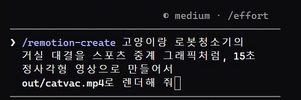

Remotion은 영상을 코드(React)로 만드는 도구예요. Remotion 팀이 공식으로 내놓은 에이전트 스킬을 Claude Code에 깔면, 말 한 줄로 시킨 장면을 클로드가 코드로 짜고 mp4 파일까지 직접 뽑아 줘요. 아래 세 편은 저희가 격리 폴더에서 실제로 한 줄씩 시켜서 나온 그대로예요. 세 편 모두 다시 고쳐 달라고 한 적 없이 한 번에 나왔고, 한 편에 8~13분 걸렸어요. 소리는 없어요.
터미널에서 '복사해서 쓰기'의 첫 명령을 실행해요. my-video 폴더가 생기고 필요한 것들이 깔려요(저희 PC에서 약 1분 20초). 이미 Remotion 프로젝트가 있으면 건너뛰어요.
my-video 폴더로 들어가 'npx remotion skills add'를 실행해요(약 1분). 스킬 13개가 프로젝트 안 .agents/skills에 깔리고, Claude Code가 읽는 .claude/skills에 연결돼요. 내 컴퓨터 전체가 아니라 이 프로젝트에만 깔려요. 모든 프로젝트에서 쓰고 싶으면 'npx skills add remotion-dev/skills'(설치 위치를 물어봐요)나 Claude Code 플러그인('막힐 때' 참고)을 써요.
my-video 폴더에서 claude 를 실행하고, 맨 앞에 /remotion-create 를 붙여 한 줄로 시켜요. 잘 나온 틀: [소재] + [어떤 장르처럼] + [길이·비율] + [파일 이름으로 렌더해 줘]. 예: '고양이랑 로봇청소기의 거실 대결을 / 스포츠 중계 그래픽처럼 / 15초 정사각형 영상으로 만들어서 / out/catvac.mp4로 렌더해 줘'. 일상 소재를 과장된 장르(영화 예고편·재난 영화·스포츠 중계·뉴스 속보)에 넣으면 클로드가 장르 문법(카운트다운·자막 띠·점수판)을 알아서 채워요.

클로드가 장면을 나눠 React 코드로 짜고(src 폴더에 파일이 생겨요), 미리보기 화면(Remotion Studio)을 켜 두고, 'npx remotion render …' 명령으로 mp4를 뽑아요. 저희가 시킨 세 편에선 다 뽑은 뒤 장면별 정지 화면을 스스로 꺼내 보고 어색한 곳을 고친 뒤 다시 렌더했어요(라면 편: 냄비와 불 사이 틈, 제목이 가려진 곳, 국물 색이 탁해지는 곳). 걸린 시간: 고양이 8분 28초, 월요일 8분 4초, 라면 약 12분 45초.
요청에 적은 파일(out/catvac.mp4 등)이 결과예요. 문구·길이를 바꾸고 싶으면 같은 대화에서 한 줄로 더 시키거나('골 넣는 장면을 더 길게'), 클로드가 알려 준 Studio 주소(보통 http://localhost:3000, 이미 쓰는 중이면 3001)를 브라우저로 열어 타임라인에서 장면 길이·글자를 직접 고쳐도 돼요. 고친 뒤엔 '다시 렌더해 줘'.
결과엔 소리가 없어요. 클로드도 '음원 파일을 public/에 넣어 주면 컷에 맞춰 붙이겠다'고 했어요. 저작권 걱정 없는 음악·효과음 파일을 my-video/public 폴더에 넣고 '이 음악 깔고 골 장면에 효과음 넣어 줘'처럼 시켜요(저희는 소리 넣기까지는 해 보지 않았어요).
고양이: /remotion-create 고양이랑 로봇청소기의 거실 대결을 스포츠 중계 그래픽처럼, 15초 정사각형 영상으로 만들어서 out/catvac.mp4로 렌더해 줘 월요일: /remotion-create 월요일 아침 출근길을 재난 영화 오프닝처럼, 15초 정사각형 영상으로 만들어서 out/monday.mp4로 렌더해 줘 라면: /remotion-create 라면 하나 끓이는 걸 할리우드 액션 영화 예고편처럼, 15초 정사각형 영상으로 만들어서 out/ramen.mp4로 렌더해 줘 월요일 편은 라면 편과 같은 프로젝트에서 시켜서, 화면 흔들림·검은 띠·번쩍임 효과를 라면 편 코드에서 가져다 썼어요(클로드가 스스로 밝힘). 고양이 편은 새 프로젝트에서 처음부터 만들었어요.
쓰기 좋은 때: 짧은 웃긴 영상·인트로·자막 카드·숫자 그래프처럼 '그림과 글자가 움직이는' 영상, 같은 틀에 글만 바꿔 여러 개 뽑을 때(코드라서 문구만 바꿔 다시 렌더). 안 맞는 때: 찍어 둔 실제 영상을 감성적으로 컷 편집하고 싶을 때, 사람 얼굴이 나오는 실사 장면이 필요할 때(그림으로 그려요), 바로 1분 안에 결과가 필요할 때(한 편 8~13분).
터미널에서
npx create-video@latest --yes --blank my-video
my-video 폴더에서
cd my-video && npx remotion skills add
my-video 폴더에서
claude
Claude Code에서 (대괄호를 바꿔요)
/remotion-create [소재]를 [장르]처럼, 15초 정사각형 영상으로 만들어서 out/[파일이름].mp4로 렌더해 줘
Claude Code에서
/remotion-create 고양이랑 로봇청소기의 거실 대결을 스포츠 중계 그래픽처럼, 15초 정사각형 영상으로 만들어서 out/catvac.mp4로 렌더해 줘
고친 뒤 Claude Code에서
방금 고친 내용으로 다시 렌더해 줘
도움이 되셨다면
@ai.antenna.kr
에서 바로 쓰는 AI 활용법을 계속 올립니다.